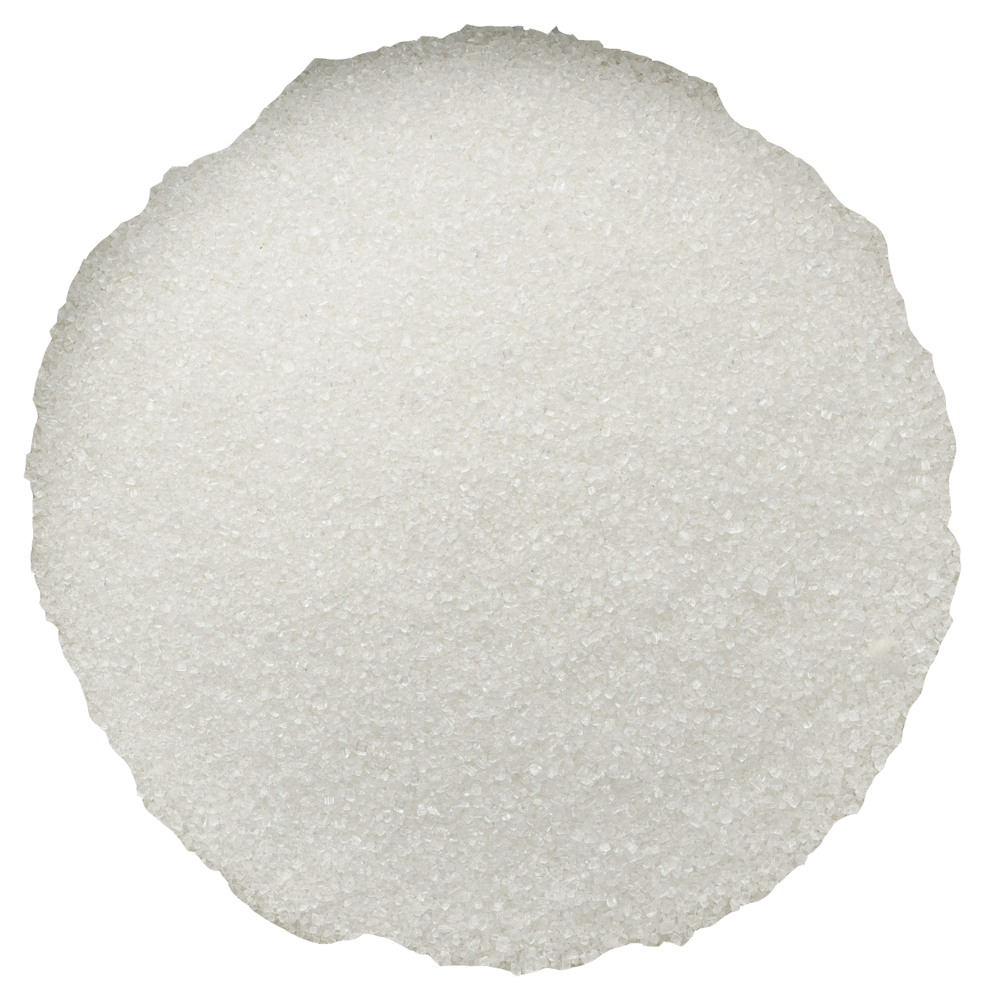
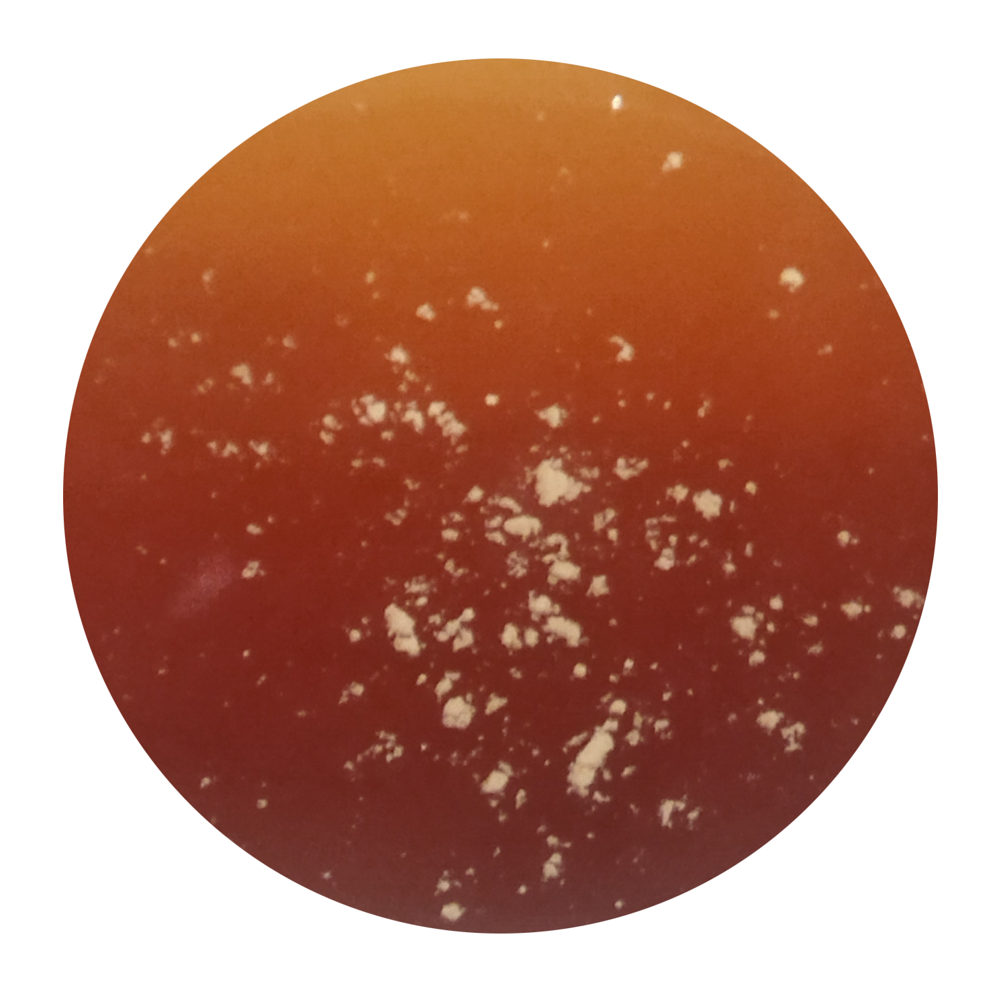
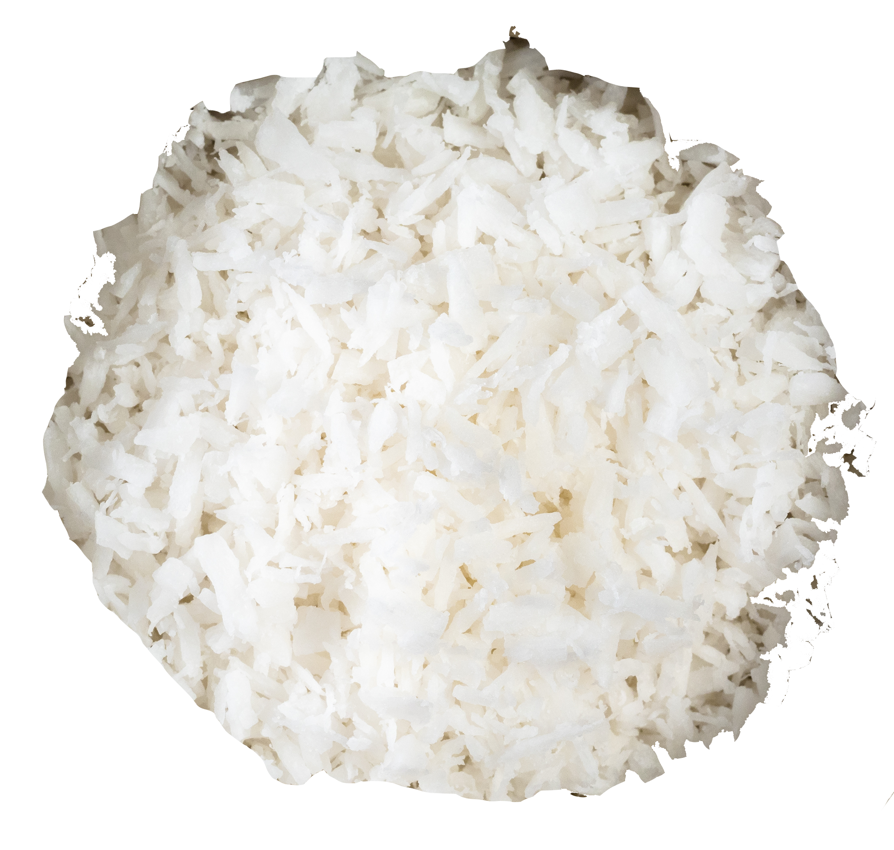

Slop Cookies
about
You may be wondering why the name of this recipe includes the word 'slop'. It has been observed by my roomates that I seem to have a penchant for homogenous foods, or what they like to refer to as 'slop'. I assure you that these breakfast cookies are a delicious way to start your day, despite the designation they have been given. That being said, since they are a breakfast item, they are less sweet than the traditional cookie. The mix-ins that I usually like (cranberries, coconut and chocolate chips) can be substituted for any other dried fruit, nut, or 'chip'.
preparation
- total recipe time: 45 min
- preheat the oven to 350 degrees, so it will be ready by the time the dough has been made.
- equipment needed: 2 medium/large mixing bowls, whisk, spatula, baking sheet & parchment paper.
- allergens: contains dairy (gluten and egg free)
ingredients
-
 2 ripe bananas, mashed
2 ripe bananas, mashed -
 1 tbsp ground flaxseeds + 1 tbsp water
1 tbsp ground flaxseeds + 1 tbsp water -
 3 tbsp butter, melted
3 tbsp butter, melted -

1/4 cup sugar
-

2 tsp vanilla extract
-
 3/4 cup oat, millet, or other GF flour
3/4 cup oat, millet, or other GF flour -
 3/4 cup rolled oats
3/4 cup rolled oats -
 1 tsp cinnamon
1 tsp cinnamon -
 1 tsp baking powder
1 tsp baking powder -
 1/2 tsp baking soda
1/2 tsp baking soda -
 1/2 tsp salt
1/2 tsp salt -

1/4 cup unsweetened coconut flakes
-
 1/2 cup chopped dried cherries or cranberries
1/2 cup chopped dried cherries or cranberries -
 1/2 cup dark chocolate chips
1/2 cup dark chocolate chips
instructions
- Preheat the oven to 350 degrees
- Combine the ground flaxseeds with the water and allow to gel for 5 minutes.
- In a bowl combine the melted butter and sugar and whisk together well. Pour in the vanilla and flax egg and whisk again until fully incorporated
- In a separate bowl combine the flour, oats, cinnamon, baking powder, baking soda and salt. Mix together and then pour the dry ingredients into the wet ingredients.
- With a spatula fold the ingredients together until most of the flour is combined then pour in the coconut flakes, dried fruit and chocolate chips. Fold everything together until you form a sticky dough.
- Scoop up about 2 tbsp of dough and roll into a dough ball to place on a baking sheet and lightly flatten the dough. Repeat with remaining dough making sure to give enough space for the dough to spread when it bakes.
- Place the cookies in the oven to bake for 13-18 minutes (until they are lightly browned). Remove from the oven, let the cookies rest on the tray until cooled, then enjoy!
- I normally store cookies loosely covered or in a tupperware on the counter for up to a week.